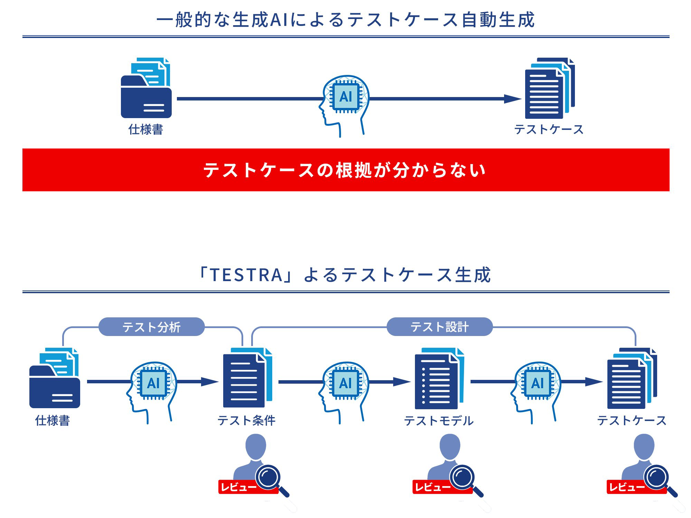
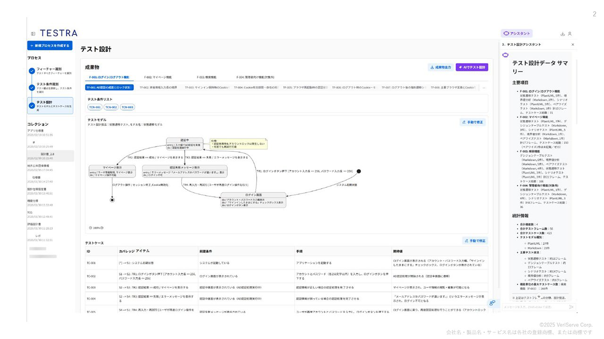

TESTRA — 機能・導線・画面
確認日：2026年10月27日。比較の見どころ・画面／動画ギャラリー
調査範囲
仕様書からテスト条件・モデル・ケースを生成し、中間根拠を人が確認する設計支援。
公式の製品画面素材とサービスページ。ログイン後の生成・編集は未操作。自律ブラウザ操作の公開動画は未確認。
作業の流れ
仕様書 → テスト条件 → 人がreview → テストモデル → review → テストケース → 実行管理・導入支援
機能の構成
公式画面例にモデルとケース、AIの説明。生成の過程と根拠を参照する。
下表は公開説明・文書の要約。実操作した範囲は画面一覧と調査範囲に限定し、表全体を実機検証済みとはしない。
| 段階 | 画面・機能 | 入力・操作と次の行動 |
|---|---|---|
| 入力 | 仕様・要件 | 仕様書・要件定義を基に分析する。 |
| 分析 | Test conditions | テスト観点DBを使って条件を生成する。 |
| 中間review | 根拠・過程 | AIが直接ケースだけを返す方式と区別し、人が分析結果を確認する。 |
| モデル | Test model | 条件からテストモデルを構成・レビューする。 |
| 設計 | Test cases | モデルと条件を根拠にケースを生成する。 |
| 運用 | 実行管理 | 設計成果から実行管理へつなぐ説明。実アプリの自律操作とは別機能。 |
| 定着 | 専門家支援 | 組織での標準化・利用定着を支援する。 |
人の担当と比較上の着眼点
分析・モデル・ケースのレビューと修正、組織の観点・運用の合意。
調査者の解釈：期待とテストの対応を中間成果物から説明できるかという上流部分の比較相手。 製品性能の優劣を実証した結論ではない。
動画と見る場面
製品操作を確認できる動画を今回保存できていない。存在しない・非対応という意味ではない。問い合わせ画面で代用しない。
画面一覧
| 画面 | 種別 | 出典 |
|---|---|---|
 図表1：一般的な生成AIによるテストケース生成と「TESTRA」によるテストケース生成の違い |
official-diagram | 掲載元 |
 図2：テストケースの自動生成（イメージ） |
official-ui-image | 掲載元 |